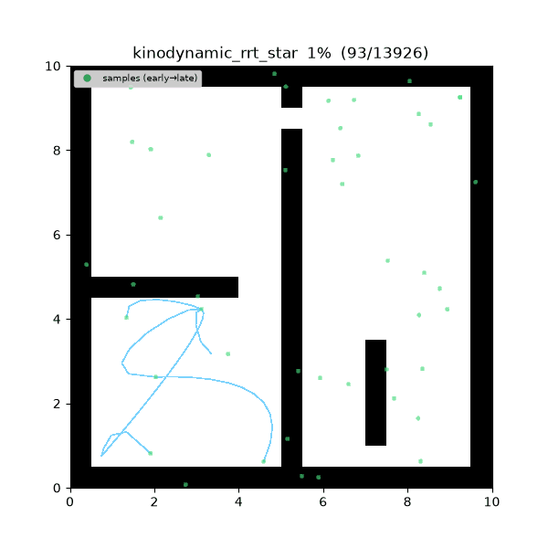
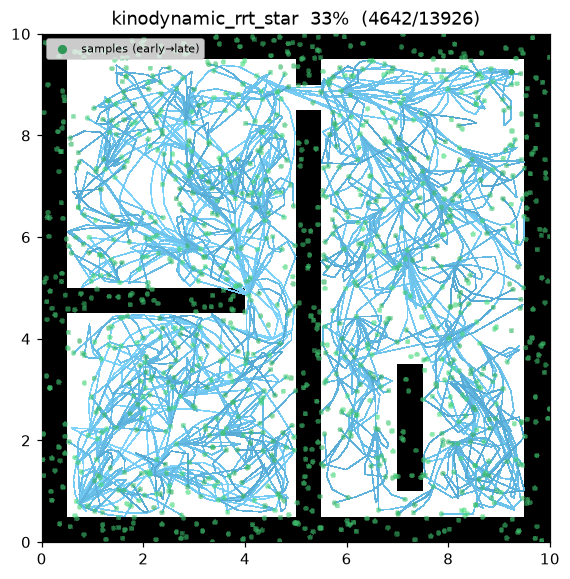
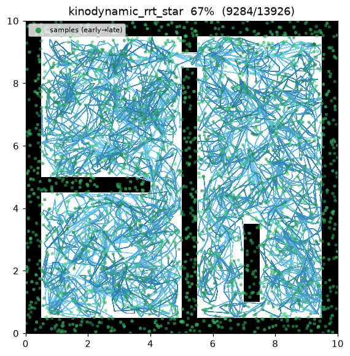
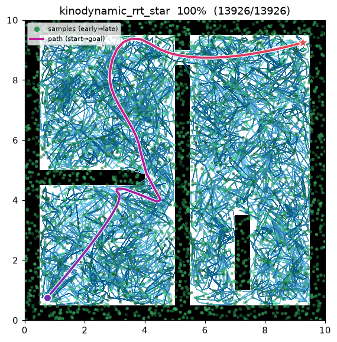
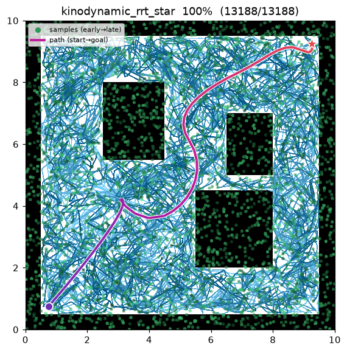

Kinodynamic RRT*¶
| 항목 | 내용 |
|---|---|
| 분류 | sampling-based, single-query, anytime, kinodynamic |
| 요구 capability | SamplingSpace |
| 완전성 | probabilistically complete |
| 최적성 | asymptotically optimal — 동역학 비용 기준 (Webb & van den Berg 2013) |
| 복잡도 | 반복당 near-neighbor 마다 optimal-steering 해(quartic root) 계산이 지배 |
| 원 논문 | Webb & van den Berg (2013) 1 |
배경¶
기하 RRT 는 노드를 직선 선분으로 잇고 유클리드 거리로 잰다. 동역학을 가진 로봇에는 이것이 성립하지 않는다 — 자동차나 쿼드로터는 속도를 순간적으로 바꿀 수 없으므로, 두 상태를 잇는 직선은 실행 가능한 궤적이 아니다. Webb & van den Berg1 는 직선 edge 와 유클리드 metric 을 fixed-final-state, free-final-time optimal controller 의 궤적과 비용으로 바꿔 RRT 를 미분 제약(differential constraint) 이 있는 시스템으로 확장했다.
가제어(controllable) 선형 시스템 \(\dot{x}=Ax+Bu\) 와 running cost \(J=\int_0^\tau\!\bigl(1+u^\top R\,u\bigr)\,dt\) 에 대해, 임의의 두 상태 사이 optimal arrival cost 가 닫힌 형태로 존재한다. Kinodynamic RRT 는 이 비용을 nearest-neighbor metric 과 choose-parent / rewire 비용 양쪽에 쓴다 — 기하 RRT 에서 유클리드 거리가 하던 바로 그 역할이다. 따라서 트리는 유클리드 공간이 아니라 동역학이 유도하는 비용 기하 에서 자라고 곧아진다.
이 구현은 2D double integrator 를 소유한다: 상태 \((x, y, v_x, v_y)\), 제어 = 가속도.
SamplingSpace capability 에만 의존한다 — 맵은 \((x, y)\) 투영에 대해 is_state_valid /
is_motion_valid 만 답하고 속도는 전혀 모른다. start 와 goal 은 정지(rest) 상태(속도 0)로 들어올린다.
동작 원리¶
maze01 — 트리 edge 가 곡선이다(직선이 아니라 double-integrator 궤적). rewire 가 비용 공간에서
incumbent 를 곧게 편다.

탐색 중간 과정 (좌 → 우: 초반 / 중반 / 최종 경로):
 |
 |
 |
open01 최종 결과:

KINODYNAMIC_RRT_STAR(start, goal):
x_start ← (start, v=0); x_goal ← (goal, v=0) # 정지 상태로 들어올림
T ← {x_start}
for i in 1..max_iterations: # anytime — 끝까지 돈다
x_rand ← (확률 goal_bias 로 goal 정지상태) else (위치 sample + 임의 속도)
x_near ← argmin_{x∈T} c*(x, x_rand) # metric = optimal-control 비용
x_new ← x_rand # optimal steering 이 정확히 도달
N ← near(T, x_new, neighbor_radius)
parent ← argmin_{x∈N∪{x_near}} cost(x) + c*(x, x_new) # choose-parent (feasible edge)
T.add(x_new, parent) # edge = optimal 궤적, collision-check
for x ∈ N: # rewire
if cost(x_new) + c*(x_new, x) < cost(x) and trajectory(x_new,x) free:
x.parent ← x_new
if ‖x_new − goal‖ ≤ goal_tolerance:
best ← min(best, path through x_new to x_goal)
return best
\(c^*(a,b)\) 는 \(a\) 에서 \(b\) 까지 궤적의 optimal-control 비용이고, 모든 edge 는 궤적을 샘플링해
연속 waypoint 에 is_motion_valid 를 호출하여 충돌 검사한다(기하 RRT* 가 직선 edge 에 하던 검증과 동일).
측정치 (Python, seed = 1, 4000 iterations, trace on):
| map | path cost | tree size | runtime |
|---|---|---|---|
| maze01 | 31.373 | 2,329 | ~3.1 s |
| open01 | 26.888 | 2,143 | ~3.2 s |
C++ 구현은 동일 알고리즘이다(cmake 빌드 후 demo_kinodynamic_rrt_star 실행). 난수 스트림이
Python 과 달라 정확한 비용은 다른 planner 들과 마찬가지로 미세하게 다르다.
재현:
python python/demos/demo_kinodynamic_rrt_star.py \
--map maps/grid/maze01.yaml --scenario maps/scenarios/maze01_s1.yaml \
--params configs/global_planning/kinodynamic_rrt_star.yaml --trace out/kino.jsonl
python tools/viz/replay.py out/kino.jsonl --gif out/kino.gif
Optimal Steering — 닫힌 형태¶
planner 전체가 하나의 닫힌 형태 primitive 위에 선다: double integrator 두 상태 사이의 optimal 비용·arrival time·궤적 (Webb & van den Berg 2013)1.
시스템. 위치 \(p\in\mathbb{R}^2\), 속도 \(v\in\mathbb{R}^2\), 상태 \(x=(p,v)\) 에 대해
\(A\) 는 nilpotent(\(A^2=0\)) 이므로 \(e^{At}=I+At\). weighted controllability Gramian \(G(t)=\int_0^t e^{A(t-s)}BR^{-1}B^\top e^{A^\top(t-s)}\,ds\) 는 축별로 \(2\times2\) 블록으로 분리된다:
비용. \(d(t)=x_1-e^{At}x_0\) 에 대해 arrival time \(t\) 의 cost-to-go 는 \(c(t)=t+d(t)^\top G(t)^{-1}d(t)\). 두 축 합으로, \(a=p_1-p_0\), \(v_0,v_1\) 을 축별 끝점 속도라 하면
최적 arrival time. \(c'(t)=0\) 에 \(t^4\) 를 곱해 정리하면 (cubic 항이 없는 이미 depressed 인) quartic
이 나오고, \(c(t)\) 를 최소화하는 양의 실근이 \(\tau^*\) 다. (구현은 네 근을 모두 구해 — Python 은
numpy.roots, C++ 은 Durand–Kerner — 양의 실 최소점을 취한다.)
최적 궤적. \(c(\tau^*)\) 를 실현하는 위치 궤적은 축별로 \(t=0\) 의 \((p_0,v_0)\) 와 \(t=\tau^*\) 의 \((p_1,v_1)\) 를 지나는 유일한 cubic — 최소 \(\int\lVert u\rVert^2\) Hermite interpolant 다. 이를 샘플링해 edge 충돌 검사와 곡선 렌더링에 쓴다.
Metric 계약. \(c^*(x,x)=0\), \(x\ne y\) 이면 \(c^*(x,y)>0\); 제어 가중 \(r\) 이 클수록 같은 기동의 비용이 커진다.
성질¶
- 완전성: probabilistically complete1.
- 최적성: 동역학 비용 \(J\) 기준 asymptotically optimal — 샘플 수 → ∞ 에서 incumbent 가 최소 \(J\) 궤적으로 수렴한다1.
- 기하 RRT* 와의 차이: edge 가 동역학적으로 실행 가능한 궤적이고 metric 이 제어 비용이라, 경로가 로봇의 관성을 존중한다. 대가는 유클리드 거리 대신 후보 edge 마다 quartic 해다.
- 실무 주의: 이 구현은 고정
neighbor_radius(위치 prefilter)를 쓰고 near/nearest 후보 집합을 상한으로 캡한다 (k-nearest RRT* 변형, Karaman & Frazzoli 2011). 후보들 사이 선택은 여전히 정확한 optimal 비용으로 한다.
파라미터¶
| 이름 | 타입 | 기본값 | 범위 | 설명 |
|---|---|---|---|---|
max_iterations |
int | 4000 | [1, 200000] | 반복 예산 (anytime — 소진 시 현재 best 반환) |
goal_bias |
float | 0.1 | [0.0, 1.0] | goal 정지상태를 직접 sample 할 확률 |
goal_tolerance |
float | 1.0 | [0.0, 100.0] | goal 연결을 시도하는 위치 근접 반경 (m) |
neighbor_radius |
float | 2.0 | [0.01, 100.0] | choose-parent / rewire 위치 근방 반경 (m) |
control_weight |
float | 1.0 | [0.001, 1000.0] | \(J=\int 1+r\,u^\top u\,dt\) 의 제어 가중 \(r\) (Webb & van den Berg 2013) |
max_velocity |
float | 1.5 | [0.01, 100.0] | 축별 샘플 속도 범위 \([-v_{\max}, v_{\max}]\) (m/s) |
seed |
int | 1 | [0, 2^31−1] | 난수 시드 (재현성) |
방출 trace 이벤트¶
planning_started → (sample_drawn, candidate_evaluated, edge_added, rewire) → path_found* → planning_finished
path_found 는 여러 번 방출될 수 있다 (incumbent 개선 시마다). edge 는 각 optimal 궤적을 따라
chord 사슬로 방출되어 viz 가 곡선을 렌더링한다.
References¶
-
Webb, D. J., & van den Berg, J. (2013). "Kinodynamic RRT: Asymptotically Optimal Motion Planning for Robots with Linear Dynamics." IEEE International Conference on Robotics and Automation (ICRA)*, 5054–5061. doi:10.1109/ICRA.2013.6631299 · PDF (arXiv) ↩↩↩↩↩